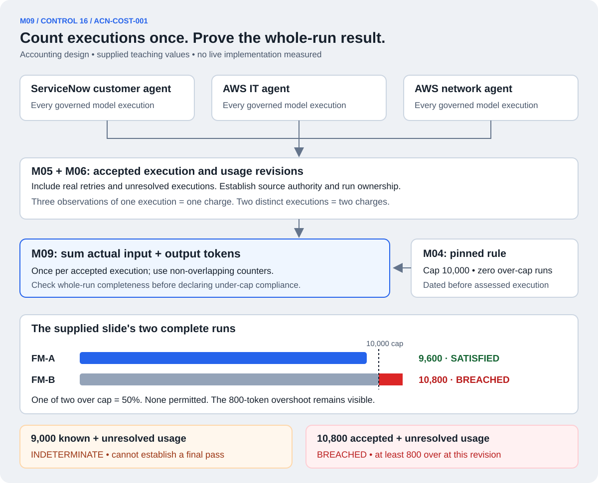

What did the whole run spend? Can we account for every execution?
M09 implements the accounting test for ACN-COST-001: reconcile actual input and output tokens across all three governed agents and every real retry, then compare the whole-run total with the dated rule.
M04 supplies the pinned policy, M05 reconciles source facts, M06 provides their exact revisions, and M09 calculates the result. M12 composes the assessment and M13 exposes its supporting evidence. M10 separately manages optional live reservations and prevention.
Source and implementation boundary: the supplied slide uses a 10,000-token cap, zero over-cap runs, FM-A at 9,600 and FM-B at 10,800. These are teaching values, not our measurements. The functions and evidence contract below are proposed; no live whole-run accounting or gateway enforcement has been demonstrated.

All agents → actual executions → accepted usage → whole-run assessment. Many supporting records can describe one charge.
One run is the entire fault-resolution journey.
The customer-facing ServiceNow agent, AWS IT agent and AWS network agent may each make several model calls. Their governed calls belong to the same fault-resolution run. The scope includes actual retries, including hidden SDK retries when they perform additional model executions.
Use trusted source namespaces and authoritative execution identifiers to establish distinct executions. An application attempt can produce zero, one or several executions. A transport retry that only fetches the same response is not necessarily a new inference; a genuinely repeated inference is another execution even when it uses the same prompt and returns the same token count.
The expected workflow, admitted work and authoritative source reconciliation establish the population. Collecting every page currently available from a log endpoint does not prove no calls were omitted. For a final under-cap result, show that governed work cannot legitimately continue under this run, all dispatched or ambiguous work has been resolved, and required source coverage is established. A database flag saying “closed” alone proves none of those facts.
Do not reset the budget by changing an ID. M03's authorized run lifecycle decides whether a new request starts a genuinely new run or resumes the existing one. Agent-chosen identifiers cannot split one governed journey into several smaller budgets.
Define exactly what “tokens” means before execution.
The source measure is input plus output tokens. Pin the authoritative usage source, units, included categories and counter semantics in the dated policy. Use provider-specific definitions established from available documentation and actual records; do not assume every provider reports identical fields.
Synthetic example
Correct accounting
Why
Input 800 includes cached input 300; output 200 includes reasoning 50
1,000 tokens, not 1,350
Cache and reasoning fields are breakdowns already included in those totals.
Two distinct executions each report 1,000
2,000 tokens
Equal values do not establish duplicate executions.
Three observations report the same accepted execution's 1,000
1,000 tokens
Repeated observations corroborate one execution.
Partial cumulative counter 600, final cumulative counter 1,000
1,000 tokens
Do not sum cumulative readings. Distinct incremental chunks require different declared handling.
A request reserves 1,500 but actually uses 1,000
1,000 actual tokens
Reservation tracks possible exposure; it is not measured usage.
These examples explain accounting rules, not a particular provider's API schema. If a provider reports additional disjoint categories, the adapter must map them under the accepted rule. Unknown semantics or missing required fields remain a gap; do not guess zero or mix incompatible counters. Token counts are not dollar charges: cached tokens may have different prices, but the declared token cap is still a token measure.
Continue our FM-001 example: four executions, 9,000 tokens.
This is the synthetic story used in M05 and M06. The IDs and amounts are illustrative; they are not a captured workshop run.
Actual execution
Accepted input + output
How it contributes
P-088
2,000
Count once.
P-089
2,500
Count once.
P-090
3,500
Count once.
P-091
1,000
Count once, even if three observations describe it.
FM-001 total
9,000
2,000 + 2,500 + 3,500 + 1,000.
P-091's usage can support Control 16 and its event observation can support Control 7. Those many-to-many evidence bindings do not create another model execution or another 1,000-token charge. Do not sum after a join that duplicates usage rows.
Likewise, if an agent trace says “my calls total 3,000” and its leaf calls already contribute 3,000, do not add another 3,000. Use the declared source authority and non-overlapping charge units. A parent summary may corroborate the leaf calculation; it is not automatically an extra charge.
With a complete, resolved whole-run population, FM-001 satisfies an illustrative 10,000-token cap. If P-091's usage is still missing, the known subtotal is 8,000 and the final result is INDETERMINATE. Report “8,000 known; one unresolved execution,” not “8,000 total.”
Four situations that must produce different answers.
Evidence state at cap 10,000
Result
What can be claimed
Complete whole run; total 9,600
SATISFIED
The declared actual-usage limit was met.
Complete whole run; total exactly 10,000
SATISFIED
The rule is total ≤ cap, so equality is allowed.
Accepted, scoped, non-overlapping subtotal 10,800; other usage missing
BREACHED; completeness still insufficient
At least 800 over cap is already established at this evidence revision.
Known subtotal 9,000; missing usage or run still open
INDETERMINATE for final whole-run compliance
The observed subtotal is under cap, but final compliance is unproved.
A breach-producing subtotal must already be accepted under the source-authority rules, deduplicated and correctly attributed to this run. A disputed run link, overlapping counters or conflicting reports cannot establish that lower bound. Do not choose whichever report produces a convenient verdict.
An open run may show a provisional “currently recorded below cap” status. That is not the final control result. NOT_ASSESSED applies when there is no eligible/implemented selected assessment or the declared assessed population is empty. For a selected eligible run, missing execution inventory, an empty download or conflicting evidence means INDETERMINATE unless accepted usage already proves a breach. An explicitly scoped, fully reconciled no-model-execution run could have a genuine zero total if the predeclared eligibility rule includes it; an empty download is not that evidence.
The slide asks a second question: how many runs exceeded the cap?
The supplied example declares zero over-cap runs before the assessed work:
Source example
Whole-run tokens
Per-run result
FM-A
9,600
SATISFIED; 400 below cap.
FM-B
10,800
BREACHED; 800 over cap.
Assessed population
One of two runs over cap: 50%
BREACHED against the zero-run allowance.
Do not average totals across runs or use a cheaper run's spare capacity to erase another run's overshoot. If the declared policy permits a nonzero exception fraction, preserve every individual overshoot and separately assess whether the population allowance was met.
Fix the eligible assessed run population independently of received telemetry. For R expected eligible runs, b known over-cap runs and u unresolved runs, the possible over-cap share is bounded by b/R and (b+u)/R. A known violation already breaches a zero-exception rule even if other runs remain unresolved. Under another allowance, a lower bound beyond that allowance proves breach; a bound within the allowance does not waive required evidence completeness.
Missing or unstarted due runs remain visible under the frozen eligibility rule; future not-yet-due work stays pending. If population membership is unknown, no numeric percentage is justified. An empty expected population does not establish control effectiveness and must not return an automatic pass.
How is M09 invoked, and what does it return?
The measurement worker can call the pure M09 functions after new usage is reconciled, at a declared run-evidence cutoff, or when M13 requests “show Control 16 for FM-B.” Each invocation uses a pinned M04 policy and M06 accepted-input revision. The same immutable inputs produce the same calculation; persistence and delivery sit outside the pure functions.
Required inputs
Authorized team/run scope and independently established expected-work manifest.
Pinned cap, units, source-authority/counting rules and population allowance.
Unique accepted execution/usage revisions, explicit conflicts and missing facts.
Run lifecycle, outstanding/ambiguous work, source reconciliation and cutoff status.
Population membership when assessing more than one run.
Versioned assessment output
Control ID, run/population, policy version and evaluator version.
Snapshot and accepted-input revision with supporting execution/source references.
Known accepted subtotal; final total only when established; unresolved coverage.
Cap and measured or minimum proved overshoot, with exact units.
Requirement verdict, evidence sufficiency, gaps and separate prevention status.
Per-run results and population allowance calculation when applicable.
For the supplied FM-B example, the output explains: control ACN-COST-001, dated rule G-FM-v1, actual total 10,800, cap 10,000, overshoot 800, BREACHED, with the contributing call IDs and source references. A real evidence packet must contain those actual records; copying the slide's example into an output file would not demonstrate implementation.
The shared model gateway's pre-call enforcement interface belongs to M02/M10. Merely asking M09 whether usage recorded so far is below cap cannot safely admit another concurrent call. A finished assessment and an admission decision answer different questions.
Late evidence and authoritative corrections create new revisions.
If a previously missing P-091 record arrives, M05 accepts the source facts and M09 recomputes from the new accepted-input revision. If the authoritative total for P-091 is corrected from 1,000 to 1,200, FM-001 becomes 9,200, not 10,200. The correction replaces that execution's accepted total; it is not another execution.
Keep both source assertions and earlier assessments. A justified authoritative correction may change the new verdict in either direction; missing evidence alone does not erase a proved breach. M10 separately applies any required idempotent live settlement adjustment. M09 never mutates its reservation state as a side effect of a judge query.
Continue accounting for accepted usage discovered after run closure. A late report of an earlier call differs from a new dispatch authorization after closure; both remain visible, and the latter exposes a lifecycle/enforcement issue. A physical send after closure may follow a valid pre-close claim, so its send timestamp alone does not establish a violation. A cutoff is an as-of reporting boundary, not permission to ignore later charges.
Where do NVIDIA model calls fit?
The planned Nemotron Evidence Investigator helps retrieve and explain cited evidence. Its model calls also consume tokens. Record every such call under its own linked investigation run, show separate fault-resolution and assurance subtotals, and show combined platform usage.
The frozen scope rule decides whether assurance calls also count toward the governed fault-resolution cap. If the workshop rule includes them, M09 must include them; the separate bookkeeping scope cannot be used to obtain a cheaper-looking result. Avoid double counting when presenting the combined total by using distinct actual executions, not the sum of overlapping subtotals.
The model may explain why spend increased or propose source links. It cannot manufacture token counts, decide authoritative run ownership, turn missing usage into zero, or replace the deterministic arithmetic. M16 owns operational budgets/non-recursion; M11 owns the bounded investigation workflow.
Measuring overspend and preventing it are separate capabilities.
Suppose settled usage is 8,000 and M10 reserves a justified bound of 1,500 before dispatch. Possible exposure is 9,500; actual recorded usage is still 8,000. If its complete admitted execution population and authoritative final usage are resolved at 1,000, actual usage becomes 9,000 and that reservation can be released through M10's state transition. A provisional 1,000-token report updates observed actual usage but retains the full bound for admission purposes; M10 explains why.
A proved never-dispatched denied request creates no model execution for that request. A failed or timed-out dispatched request may still consume tokens; an ambiguous outcome remains unresolved until source evidence establishes its usage. Do not infer zero from an error or missing response.
A DENY is prevention evidence, not an actual over-cap run. The hackathon pass/breach demonstration still needs accepted evidence of an actual breached run under the declared test setup. If strict prevention blocks that scenario, use an organizer-permitted evaluation setup or accepted corpus, disclose it and keep the same dated assessment rule; do not relabel the denied request as 10,800 spent.
The chapter's accounting test is the completion foundation; the optional preventive extension requires verified placement, trustworthy request bounds, concurrency handling, crash recovery and no bypasses. M10 is where we dissect those guarantees next.
The five M09 subcomponents.
ID
Component
Responsibility
M09.1
Whole-run execution population
Establish all governed agents, actual executions and retries; retain unresolved work.
M09.2
Usage accounting rules
Apply pinned, non-overlapping input/output/cache/reasoning semantics; separate actuals from reservations.
M09.3
Actual usage aggregator
Sum each accepted execution once; exclude duplicate observations, binding fan-out and overlapping parent totals.
M09.4
Cap / exception evaluator
Compare each run with its cap, then evaluate the allowance over the fixed eligible population.
M09.5
Missing-usage sufficiency evaluator
Distinguish proved overspend, complete compliance and unresolved under-cap evidence.
These are five responsibilities in the shared Python worker, not five deployed services. Completion requires actual three-agent/retry accounting, an unchanged justified dated rule, named pass/breach runs, reproducible exact-source queries, duplicate/conflict/missing-usage handling and an export containing the required evidence.
INDEPENDENT AI REVIEW
Can this accounting create a false pass or a false charge?
The independent reviewer checks execution identity, token categories, source authority, run finality, incomplete evidence, aggregate allowances, corrections, investigator scope and separation from prevention. Review does not establish a working integration.
Independent reviewer verdict: ACCEPT after one corrected wording issue. A selected eligible run with missing inventory or an empty download is INDETERMINATE unless accepted usage already proves breach; it is not zero spend or automatically NOT_ASSESSED. No remaining material findings in execution counting, category semantics, finality, partial breach proof, corrections, population allowances, investigator scope or prevention boundaries. Illustrative arithmetic was checked separately; no live accounting or gateway test was executed.
NEXT · M10
How do we stop concurrent calls from overspending?
M10 coordinates optional admission, reservations, one-time dispatch, unknown outcomes and settlement around the pure control calculations.